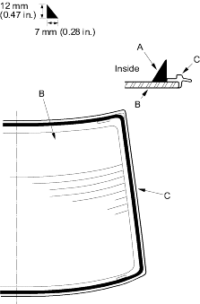

- Pack adhesive into the cartridge without air pockets to ensure continuous delivery. Put the cartridge in a caulking gun and run a bead of adhesive (A) around the edge of the rear window (B) and mouldings (C) as shown.
Apply the adhesive within 30 minutes after applying the glass primer. Make a slightly thicker bead at each corner.

- Use suction cups to hold the rear window over the opening, align it with the alignment marks you made in step 13 and set it down on the adhesive. Lightly push on the rear window until its edges are fully seated on the adhesive all the way around. Do not open or close the doors until the adhesive is dry.
- Scrape or wipe the excess adhesive off with a putty knife or towel. To remove adhesive from a painted surface or the rear window, use a soft shop towel dampened with alcohol.
- Let the adhesive dry for at least 1 hour, then spray water over the rear window and check for leaks. Mark the leaking areas, let the rear window dry, then seal with sealant. Let the vehicle stand for at least 4 hours after rear window installation. If the vehicle has to be used within the first 4 hours, it must be driven slowly.
- Reinstall all remaining removed parts. Advise the customer not to do the following things for 2 to 3 days:
- Slam the doors with all the windows rolled up.
- Twist the body excessively (such as when going in and out of driveways at an angle or driving over rough, uneven roads).